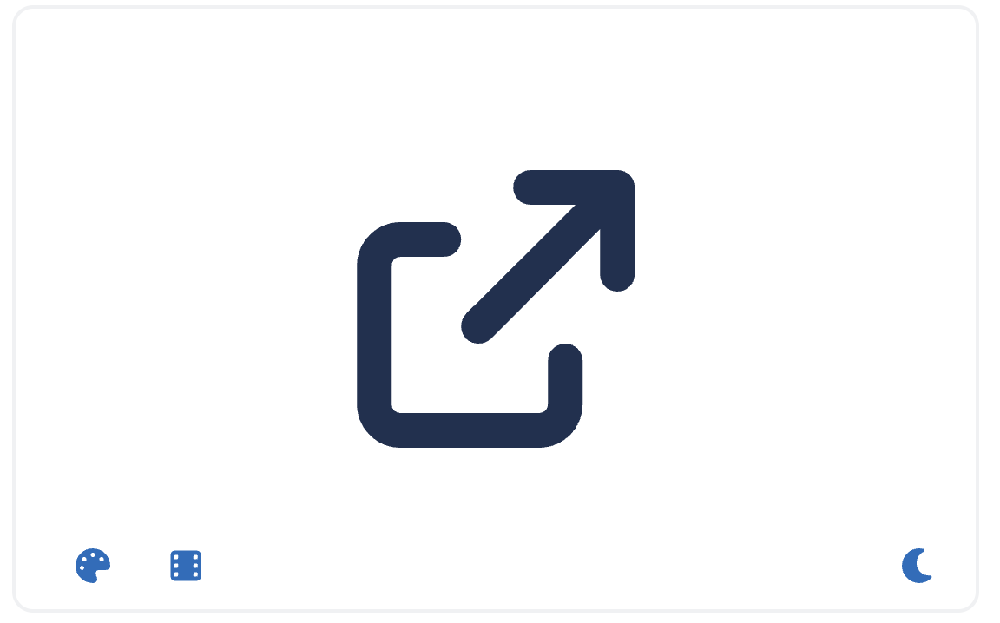

A lightweight HTML5 Canvas image editor built from scratch to explore modern JavaScript and TypeScript. Draw vectors, blur sensitive details, overlay images, and export directly to your clipboard.

Capabilities
Every annotation primitive runs client-side with zero external dependencies.
Draw crisp directional vectors to point out UI states, bugs, or key details.
Frame sections, components, or code snippets with clean rectangular outlines.
Highlight buttons, badges, and focal areas with smooth circular strokes.
Import local images via #fileInput and scale, zoom, or delete layers freely.
Redact API keys, email addresses, and personal data before publishing screenshots.
Drop expressive emoji stamps anywhere on the canvas to convey quick feedback.
Write clean typography callouts and inline notes directly onto your canvas.
Pick custom stroke and fill colors for shapes, arrows, and text labels.
Full state stack history letting you step backward and forward effortlessly.
Export your finished composition directly to disk as a crisp image file.
Copy the rendered canvas image directly into your OS clipboard for instant pasting into GitHub issues, Slack, or docs.
Everything you need to know about Canvas Studio's architecture, privacy, tool stack, and integration.
No. All image operations, pixel transformations, redactions, and canvas drawings occur strictly in-memory within your browser using standard HTML5 Canvas and Web APIs. Nothing is transmitted over the network or stored on remote cloud infrastructure.
Yes! The editor is modular and accepts a target container element parameter (new ImageEditor(base64, renderArea)). It appends cleanly to your targeted wrapper rather than polluting or forcing attachment to document.body.
You get directional arrows, geometric shapes (rectangles and circles), freehand pen markup, sensitive area blur/pixelation, emoji stamps, inline text typing, external image overlays, color customization, and full undo/redo state history with keyboard shortcuts.
Yes, via the modern Async Clipboard API (navigator.clipboard.write). Click copy or hit shortcut C, and paste directly into Slack, GitHub issues, Figma, or Jira.
Independent Web Developer & Digital Solutions Partner
I build focused digital solutions, performant web platforms, and browser-first tools. Driven by clean software craftsmanship, I explore modern JavaScript, TypeScript, and minimalist web frameworks like Astro to ship clean, fast, and delightful software.